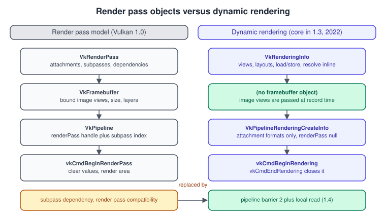
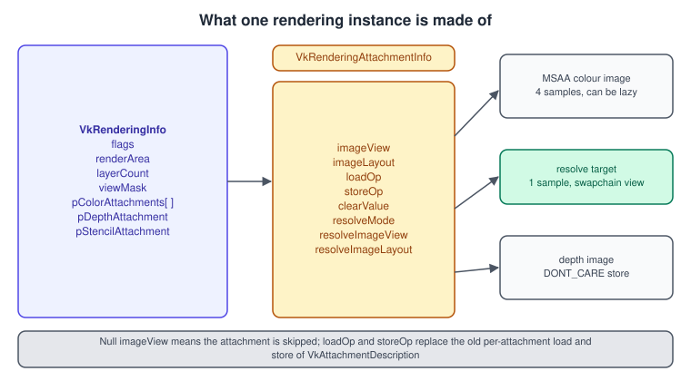
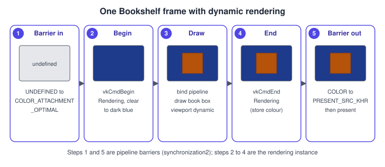
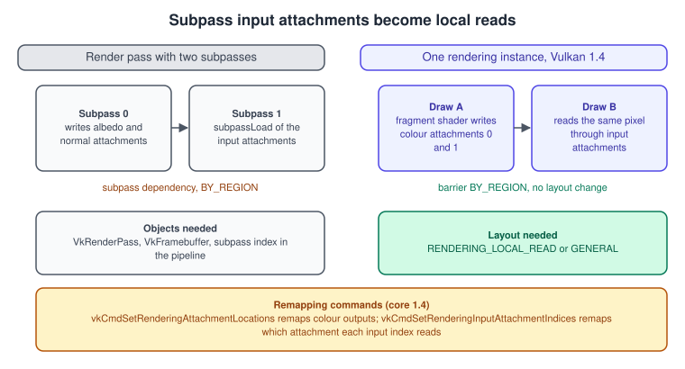
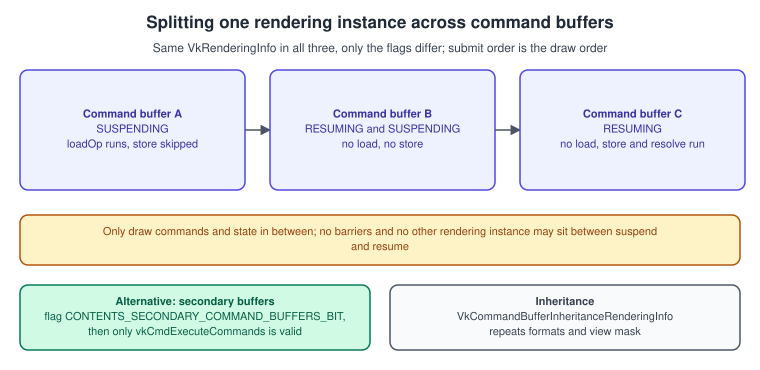

Dynamic Rendering in Vulkan
|
This content was generated with the assistance of AI and should be verified against the official documentation before being relied on in production. |
A render pass instance is the span of commands during which a draw writes to colour, depth and stencil attachments. For its first six years Vulkan only allowed such a span to be described with
two objects created in advance, a VkRenderPass (the attachments, the subpasses and the dependencies between them) and a VkFramebuffer (the actual image views), and every graphics pipeline had to be
created against a compatible render pass. Dynamic rendering removes both objects: you pass the image views, layouts, load and store operations and resolve targets directly in the call that begins rendering, and
the pipeline only needs to know the attachment formats. It was introduced by VK_KHR_dynamic_rendering, became core in Vulkan 1.3 (January 2022), and received its missing piece, reading what the previous draw wrote
at the same pixel, as dynamic rendering local read, which is core in Vulkan 1.4 (December 2024). This page explains the whole feature, every field of the structures involved, the synchronization you now own, the
tile-memory reasons it still matters on mobile GPUs, and the legacy render pass model once, so that older tutorials and engine code can be read and migrated.
The facts were checked in November 2026. The documented version is Vulkan 1.4 with headers 1.4.3xx and the LunarG SDK 1.4.363.0; everything except local read needs only Vulkan 1.3, which is the minimum of the
Vulkan Bookshelf running example. Dynamic rendering works on every desktop, mobile and Apple-translated Vulkan implementation that reports 1.3 (see
Versions, Profiles and Extensions for the feature and profile rules and
Vulkan on Apple for the portability layers). Android devices can use it when the driver reports Vulkan 1.3 or enables the extension.
The code is C++20 with Vulkan-Hpp RAII handles (see Vulkan-Hpp, RAII and the C++ Bindings); the equivalent C calls have the same names without
the vk:: wrapper.
This page serves the "triangle with dynamic rendering and sync2" step of the Bookshelf running example (C++20, Vulkan-Hpp RAII, VMA, GLFW or SDL3 and Slang shaders) and the later depth, shadow and MSAA steps. The image transitions in the examples use the barrier model of Synchronization and synchronization2; the swapchain images come from Window System Integration and the Swapchain; the pipeline objects are introduced in The Graphics Pipeline. The general idea of offscreen passes is in The Rendering Pipeline; the counterparts in the other APIs are Render Passes and Load/Store Actions in Metal and Framebuffers and Render to Texture.
Why the render pass objects went away

The render pass model was designed for tile-based GPUs. If the driver sees the whole pass (all attachments, all subpasses and how they depend on each other) before any draw is recorded, it can keep intermediate results in on-chip tile memory and never write them to RAM. The price was heavy: render passes and framebuffers had to be created up front, every pipeline had to be created against a compatible render pass (compatibility rules are strict and confusing), a different attachment set meant new objects, and engines that build their frame graph dynamically had to cache render pass and framebuffer objects by hash. Desktop drivers, which are immediate-mode renderers, gained little from the declaration. Dynamic rendering keeps the useful part (a bracketed span with load and store operations that tells the driver when attachments are needed) and drops the object graph. Its proposal states the motivation as simplifying application code and reducing the objects that must be created.
What you lose is the implicit work the render pass did for you: the layout transitions between initialLayout and finalLayout, the implicit external dependencies, and the subpass dependencies. With dynamic
rendering you transition layouts and synchronize with ordinary pipeline barriers. What you gain on tile-based hardware is covered under Dynamic rendering local read (Vulkan 1.4), which restores the ability to read the previous fragment results in tile memory.
| Render pass model (Vulkan 1.0) | Dynamic rendering (1.3 and 1.4) | Notes |
|---|---|---|
|
|
Load and store operations, resolve and layouts are given per call, not per object. |
|
Image views in |
No object to create or cache; the view is the attachment. |
|
|
Only formats and the view mask are needed, so one pipeline works with any compatible set of targets. |
|
|
Core in 1.3; |
|
Explicit |
The layout in |
Subpass dependencies |
Pipeline barriers, optionally inside the pass with |
|
Input attachments through subpasses |
Dynamic rendering local read (core 1.4) |
Same shader-side |
|
Not needed |
Still the right API for code that keeps render passes, such as engines with legacy back ends. |
The proposal and the specification for the feature are in the Vulkan registry and the Khronos feature proposals.
Enabling the feature
Dynamic rendering is a device feature, so a device that reports Vulkan 1.3 must still be asked for it at device creation. The feature lives in VkPhysicalDeviceVulkan13Features; the original
VkPhysicalDeviceDynamicRenderingFeatures structure is equivalent and is what you chain when you target Vulkan 1.2 plus the extension. On Vulkan 1.4 add dynamicRenderingLocalRead from
VkPhysicalDeviceVulkan14Features if you use local read.
#include <vulkan/vulkan_raii.hpp>
// Returns a logical device with the features the Bookshelf frame needs.
vk::raii::Device createDevice(vk::raii::PhysicalDevice const& physical,
uint32_t graphicsFamily,
bool wantLocalRead)
{
float const priority = 1.0f;
vk::DeviceQueueCreateInfo queueInfo{};
queueInfo.setQueueFamilyIndex(graphicsFamily).setQueuePriorities(priority);
// The chain of feature structures; Vulkan-Hpp links the pNext pointers.
vk::StructureChain<vk::DeviceCreateInfo,
vk::PhysicalDeviceFeatures2,
vk::PhysicalDeviceVulkan13Features,
vk::PhysicalDeviceVulkan14Features> chain{};
auto& features13 = chain.get<vk::PhysicalDeviceVulkan13Features>();
features13.dynamicRendering = VK_TRUE; // vkCmdBeginRendering and friends
features13.synchronization2 = VK_TRUE; // vkCmdPipelineBarrier2, vkQueueSubmit2
auto& features14 = chain.get<vk::PhysicalDeviceVulkan14Features>();
features14.dynamicRenderingLocalRead = wantLocalRead ? VK_TRUE : VK_FALSE;
char const* extensions[] = { VK_KHR_SWAPCHAIN_EXTENSION_NAME };
auto& create = chain.get<vk::DeviceCreateInfo>();
create.setQueueCreateInfos(queueInfo).setPEnabledExtensionNames(extensions);
return vk::raii::Device(physical, create);
}Before enabling the 1.4 member, query it: a driver that reports 1.4 must support local read, but a 1.3 driver may expose it only through VK_KHR_dynamic_rendering_local_read, and that extension then has to be
enabled by name together with its own feature structure VkPhysicalDeviceDynamicRenderingLocalReadFeatures.
The structures, one by one
vkCmdBeginRendering and VkRenderingInfo
vkCmdBeginRendering(commandBuffer, pRenderingInfo) starts a render pass instance in a command buffer that is recording on a graphics-capable queue and is outside any other render pass instance. A matching
vkCmdEndRendering ends it. Between them you bind pipelines, set dynamic state, bind resources and draw; you must not record transfers, dispatches or barriers that are not allowed inside a render pass (a barrier
is allowed only with the local read rules below).

VkRenderingInfo field |
Meaning | Notes |
|---|---|---|
|
|
|
|
|
Must fit inside every attachment. Draws outside it are discarded. Rendering to a smaller area than the image is a cheap way to scissor tilers. |
|
Number of layers rendered (array images, cube faces, 3D slices) |
Must be non-zero when |
|
Multiview mask |
Non-zero turns multiview on: one bit per view, and each view renders to the layer with the same index. See Multiview and layered rendering. |
|
Array of |
At most |
|
Pointers to |
They may point to the same view when the format is a combined depth-stencil format and the load and store ops are identical. |
If one of the pointers is null, that aspect is not attached. A pass can have only depth (shadow maps), only colour (post-processing) or neither (a pure occlusion or transform-feedback style use).
VkRenderingAttachmentInfo
| Field | Meaning | Notes |
|---|---|---|
|
The view to render into |
Null means: no attachment, other members ignored, writes discarded (with an external-format exception for Android). |
|
Layout of the image while the pass runs |
|
|
How a multisample view is resolved |
|
|
Destination single-sample view and its layout |
Ignored when |
|
What happens to the contents at the start |
|
|
What happens at the end |
|
|
|
Colour as float, int or uint, or depth and stencil. Used only when |
The two operations are the single most important performance choice of the pass on tile-based GPUs, exactly as for Metal: ask, for every attachment, what reads it next. A depth buffer used only for depth testing in this
pass should be cleared and then DONT_CARE on store; a multisampled colour image that is resolved and never sampled again should be DONT_CARE too, and ideally backed by lazily allocated, transient memory
(VK_IMAGE_USAGE_TRANSIENT_ATTACHMENT_BIT with a LAZILY_ALLOCATED memory type, see
Memory Heaps, Types and VMA). An unnecessary LOAD or STORE on a tiler is a full read or write of the image from the memory bus. On an immediate-mode GPU the
operations change little, except that CLEAR can use a fast-clear path.
A complete frame with dynamic rendering

The procedure for a swapchain frame has five steps, shown in the storyboard.
-
Transition the swapchain image from
UNDEFINEDtoCOLOR_ATTACHMENT_OPTIMALwith a barrier whose destination stage isCOLOR_ATTACHMENT_OUTPUT. UseUNDEFINEDas the old layout because the clear or the draws overwrite everything. -
Fill a
VkRenderingAttachmentInfofor the colour view (clear to a dark blue), another for the depth view, and callvkCmdBeginRendering. -
Set the dynamic state the pipeline declared, bind the pipeline and the Bookshelf buffers, and draw.
-
Call
vkCmdEndRendering; stores and resolves happen here. -
Transition the image to
PRESENT_SRC_KHRwith a barrier, then submit and present.
#include <vulkan/vulkan_raii.hpp>
#include <array>
struct FrameTargets {
vk::Image swapImage;
vk::ImageView swapView;
vk::Image depthImage;
vk::ImageView depthView;
vk::Extent2D extent;
};
// Helper: one image barrier with synchronization2 (core in Vulkan 1.3).
static void transition(vk::raii::CommandBuffer& cmd, vk::Image image,
vk::ImageAspectFlags aspect,
vk::ImageLayout oldLayout, vk::ImageLayout newLayout,
vk::PipelineStageFlags2 srcStage, vk::AccessFlags2 srcAccess,
vk::PipelineStageFlags2 dstStage, vk::AccessFlags2 dstAccess)
{
vk::ImageMemoryBarrier2 barrier{};
barrier.setSrcStageMask(srcStage).setSrcAccessMask(srcAccess)
.setDstStageMask(dstStage).setDstAccessMask(dstAccess)
.setOldLayout(oldLayout).setNewLayout(newLayout)
.setSrcQueueFamilyIndex(vk::QueueFamilyIgnored)
.setDstQueueFamilyIndex(vk::QueueFamilyIgnored)
.setImage(image)
.setSubresourceRange({aspect, 0, 1, 0, 1});
vk::DependencyInfo dep{};
dep.setImageMemoryBarriers(barrier);
cmd.pipelineBarrier2(dep);
}
void recordBookshelfFrame(vk::raii::CommandBuffer& cmd,
FrameTargets const& t,
vk::Pipeline pipeline,
vk::PipelineLayout layout,
vk::Buffer vertexBuffer,
vk::Buffer indexBuffer,
uint32_t indexCount)
{
cmd.begin(vk::CommandBufferBeginInfo{vk::CommandBufferUsageFlagBits::eOneTimeSubmit});
// 1. swapchain image: UNDEFINED -> COLOR_ATTACHMENT_OPTIMAL
transition(cmd, t.swapImage, vk::ImageAspectFlagBits::eColor,
vk::ImageLayout::eUndefined, vk::ImageLayout::eColorAttachmentOptimal,
vk::PipelineStageFlagBits2::eColorAttachmentOutput, {},
vk::PipelineStageFlagBits2::eColorAttachmentOutput,
vk::AccessFlagBits2::eColorAttachmentWrite);
// depth image: UNDEFINED -> DEPTH_ATTACHMENT_OPTIMAL (early and late fragment tests)
transition(cmd, t.depthImage, vk::ImageAspectFlagBits::eDepth,
vk::ImageLayout::eUndefined, vk::ImageLayout::eDepthAttachmentOptimal,
vk::PipelineStageFlagBits2::eLateFragmentTests, {},
vk::PipelineStageFlagBits2::eEarlyFragmentTests | vk::PipelineStageFlagBits2::eLateFragmentTests,
vk::AccessFlagBits2::eDepthStencilAttachmentWrite);
// 2. the rendering instance
vk::RenderingAttachmentInfo color{};
color.setImageView(t.swapView)
.setImageLayout(vk::ImageLayout::eColorAttachmentOptimal)
.setLoadOp(vk::AttachmentLoadOp::eClear)
.setStoreOp(vk::AttachmentStoreOp::eStore)
.setClearValue(vk::ClearValue{vk::ClearColorValue{std::array<float, 4>{0.02f, 0.03f, 0.10f, 1.0f}}});
vk::RenderingAttachmentInfo depth{};
depth.setImageView(t.depthView)
.setImageLayout(vk::ImageLayout::eDepthAttachmentOptimal)
.setLoadOp(vk::AttachmentLoadOp::eClear)
.setStoreOp(vk::AttachmentStoreOp::eDontCare) // nothing reads it after the pass
.setClearValue(vk::ClearValue{vk::ClearDepthStencilValue{1.0f, 0}});
vk::RenderingInfo info{};
info.setRenderArea({{0, 0}, t.extent})
.setLayerCount(1)
.setColorAttachments(color)
.setPDepthAttachment(&depth);
cmd.beginRendering(info);
// 3. dynamic state declared by the pipeline, then draw
vk::Viewport viewport{0.0f, 0.0f, float(t.extent.width), float(t.extent.height), 0.0f, 1.0f};
vk::Rect2D scissor{{0, 0}, t.extent};
cmd.setViewport(0, viewport);
cmd.setScissor(0, scissor);
cmd.bindPipeline(vk::PipelineBindPoint::eGraphics, pipeline);
cmd.bindVertexBuffers(0, vertexBuffer, vk::DeviceSize{0});
cmd.bindIndexBuffer(indexBuffer, 0, vk::IndexType::eUint32);
cmd.drawIndexed(indexCount, 1, 0, 0, 0);
// 4. end: store and resolve happen here
cmd.endRendering();
// 5. swapchain image: COLOR_ATTACHMENT_OPTIMAL -> PRESENT_SRC_KHR
transition(cmd, t.swapImage, vk::ImageAspectFlagBits::eColor,
vk::ImageLayout::eColorAttachmentOptimal, vk::ImageLayout::ePresentSrcKHR,
vk::PipelineStageFlagBits2::eColorAttachmentOutput,
vk::AccessFlagBits2::eColorAttachmentWrite,
vk::PipelineStageFlagBits2::eNone, {});
cmd.end();
}Points worth knowing in this listing. The swapchain image is acquired with a semaphore that signals when the presentation engine releases it, so the first barrier’s source stage must be chained with that semaphore wait
(the stage mask of the wait in vkQueueSubmit2 should be COLOR_ATTACHMENT_OUTPUT, which is why the barrier’s destination stage uses the same stage); the exact rules, including reusing the render-finished semaphores per
image, are in Window System Integration and the Swapchain and
Timeline Semaphores and Frames in Flight. The second barrier uses NONE as its destination stage because presentation is synchronized
by the semaphore that vkQueuePresentKHR waits on. The vertex and index buffers come from VMA as described in
Vertex Input and Drawing.
Pipelines for dynamic rendering
A graphics pipeline used inside dynamic rendering is created without a render pass. Instead, VkPipelineRenderingCreateInfo goes into the pNext chain of VkGraphicsPipelineCreateInfo and renderPass stays
VK_NULL_HANDLE.
VkPipelineRenderingCreateInfo field |
Meaning |
|---|---|
|
Must equal the |
|
Formats of the colour attachments by slot. |
|
Formats of the depth and stencil attachments; |
The formats and the view mask in the pipeline must match the formats of the views and the view mask used when drawing; the sample count comes from the pipeline’s multisample state. A mismatch is a validation error and undefined behaviour. Because only formats matter, one pipeline serves every swapchain image and every render target of the same format, which removes the per-framebuffer pipeline duplication of the render pass model.
// Builds the Bookshelf pipeline against dynamic rendering. Shader modules and the layout come from earlier steps.
vk::raii::Pipeline createBookPipeline(vk::raii::Device const& device,
vk::PipelineLayout layout,
vk::ShaderModule vertexModule,
vk::ShaderModule fragmentModule,
vk::Format colorFormat,
vk::Format depthFormat,
vk::SampleCountFlagBits samples)
{
std::array<vk::PipelineShaderStageCreateInfo, 2> stages{{
{{}, vk::ShaderStageFlagBits::eVertex, vertexModule, "main"},
{{}, vk::ShaderStageFlagBits::eFragment, fragmentModule, "main"},
}};
vk::VertexInputBindingDescription binding{0, 8 * sizeof(float), vk::VertexInputRate::eVertex};
std::array<vk::VertexInputAttributeDescription, 3> attributes{{
{0, 0, vk::Format::eR32G32B32Sfloat, 0}, // position
{1, 0, vk::Format::eR32G32B32Sfloat, 3 * sizeof(float)}, // normal
{2, 0, vk::Format::eR32G32Sfloat, 6 * sizeof(float)}, // uv
}};
vk::PipelineVertexInputStateCreateInfo vertexInput{{}, binding, attributes};
vk::PipelineInputAssemblyStateCreateInfo inputAssembly{{}, vk::PrimitiveTopology::eTriangleList};
vk::PipelineViewportStateCreateInfo viewportState{{}, 1, nullptr, 1, nullptr}; // dynamic
vk::PipelineRasterizationStateCreateInfo raster{};
raster.setPolygonMode(vk::PolygonMode::eFill).setCullMode(vk::CullModeFlagBits::eBack)
.setFrontFace(vk::FrontFace::eCounterClockwise).setLineWidth(1.0f);
vk::PipelineMultisampleStateCreateInfo multisample{{}, samples};
vk::PipelineDepthStencilStateCreateInfo depthStencil{};
depthStencil.setDepthTestEnable(VK_TRUE).setDepthWriteEnable(VK_TRUE)
.setDepthCompareOp(vk::CompareOp::eLess);
vk::PipelineColorBlendAttachmentState blendAttachment{};
blendAttachment.setColorWriteMask(vk::ColorComponentFlagBits::eR | vk::ColorComponentFlagBits::eG |
vk::ColorComponentFlagBits::eB | vk::ColorComponentFlagBits::eA);
vk::PipelineColorBlendStateCreateInfo blend{};
blend.setAttachments(blendAttachment);
std::array<vk::DynamicState, 2> dynamic{vk::DynamicState::eViewport, vk::DynamicState::eScissor};
vk::PipelineDynamicStateCreateInfo dynamicState{{}, dynamic};
vk::StructureChain<vk::GraphicsPipelineCreateInfo, vk::PipelineRenderingCreateInfo> chain{};
auto& rendering = chain.get<vk::PipelineRenderingCreateInfo>();
rendering.setColorAttachmentFormats(colorFormat) // one colour attachment
.setDepthAttachmentFormat(depthFormat);
auto& ci = chain.get<vk::GraphicsPipelineCreateInfo>();
ci.setStages(stages).setPVertexInputState(&vertexInput).setPInputAssemblyState(&inputAssembly)
.setPViewportState(&viewportState).setPRasterizationState(&raster).setPMultisampleState(&multisample)
.setPDepthStencilState(&depthStencil).setPColorBlendState(&blend).setPDynamicState(&dynamicState)
.setLayout(layout)
.setRenderPass(nullptr); // dynamic rendering: no render pass
return vk::raii::Pipeline(device, nullptr, ci);
}Layouts and synchronization you now own
The render pass converted every attachment between its initialLayout, the layout used inside the subpasses and its finalLayout, and added implicit dependencies with the commands before and after the pass. In
dynamic rendering the layout that VkRenderingAttachmentInfo names must already be the layout of the image when vkCmdBeginRendering executes. Forgetting the barrier is the most common mistake when porting:
the validation layer reports a layout mismatch, and on some drivers the image simply renders black. The practical rules follow.
-
The barrier before the pass names the stages that write the attachment:
COLOR_ATTACHMENT_OUTPUTfor colour,EARLY_FRAGMENT_TESTSandLATE_FRAGMENT_TESTSfor depth and stencil, and the access masksCOLOR_ATTACHMENT_WRITEandDEPTH_STENCIL_ATTACHMENT_WRITE(plus theREADbits when the load op isLOAD). -
The barrier after the pass names the same stage and access as its source and the consumer (fragment shader sampling, transfer, present) as its destination.
-
A depth image sampled by a later pass moves from
DEPTH_ATTACHMENT_OPTIMALtoSHADER_READ_ONLY_OPTIMAL(orDEPTH_STENCIL_READ_ONLY_OPTIMAL); the shadow pass below does this. -
Synchronization2 stage masks are 64-bit, so
NONEreplaces the oldTOP_OF_PIPEandBOTTOM_OF_PIPEidioms that the books use; see Synchronization and synchronization2. -
Within one rendering instance, writes from one draw to the same pixel are ordered by the primitive-ordering guarantees of the pipeline, but reads of an attachment by a later draw need local read (below).
A depth-only pass: the shadow map
A pass with no colour attachment is just a VkRenderingInfo with colorAttachmentCount zero. The Bookshelf shadow pass renders the scene from the desk lamp into a 2048 by 2048 depth image and stores it, because
the main pass samples it. The pipeline for this pass has colorAttachmentCount zero in VkPipelineRenderingCreateInfo and only depthAttachmentFormat set; the pipeline code of the previous
section works for it by passing an empty colour format list.
void recordShadowPass(vk::raii::CommandBuffer& cmd, vk::Image shadowImage, vk::ImageView shadowView,
vk::Pipeline shadowPipeline, vk::Buffer vertexBuffer, vk::Buffer indexBuffer,
uint32_t indexCount)
{
constexpr vk::Extent2D kShadowSize{2048, 2048};
// Previous contents are irrelevant: UNDEFINED -> DEPTH_ATTACHMENT_OPTIMAL.
transition(cmd, shadowImage, vk::ImageAspectFlagBits::eDepth,
vk::ImageLayout::eUndefined, vk::ImageLayout::eDepthAttachmentOptimal,
vk::PipelineStageFlagBits2::eFragmentShader, {},
vk::PipelineStageFlagBits2::eEarlyFragmentTests | vk::PipelineStageFlagBits2::eLateFragmentTests,
vk::AccessFlagBits2::eDepthStencilAttachmentWrite);
vk::RenderingAttachmentInfo depth{};
depth.setImageView(shadowView)
.setImageLayout(vk::ImageLayout::eDepthAttachmentOptimal)
.setLoadOp(vk::AttachmentLoadOp::eClear)
.setStoreOp(vk::AttachmentStoreOp::eStore) // the main pass samples it
.setClearValue(vk::ClearValue{vk::ClearDepthStencilValue{1.0f, 0}});
vk::RenderingInfo info{};
info.setRenderArea({{0, 0}, kShadowSize}).setLayerCount(1).setPDepthAttachment(&depth);
cmd.beginRendering(info);
cmd.setViewport(0, vk::Viewport{0.0f, 0.0f, 2048.0f, 2048.0f, 0.0f, 1.0f});
cmd.setScissor(0, vk::Rect2D{{0, 0}, kShadowSize});
cmd.bindPipeline(vk::PipelineBindPoint::eGraphics, shadowPipeline);
cmd.bindVertexBuffers(0, vertexBuffer, vk::DeviceSize{0});
cmd.bindIndexBuffer(indexBuffer, 0, vk::IndexType::eUint32);
cmd.drawIndexed(indexCount, 9, 0, 0, 0); // the shelf and nine books, instanced
cmd.endRendering();
// Make the depth visible to the fragment shader of the main pass.
transition(cmd, shadowImage, vk::ImageAspectFlagBits::eDepth,
vk::ImageLayout::eDepthAttachmentOptimal, vk::ImageLayout::eShaderReadOnlyOptimal,
vk::PipelineStageFlagBits2::eLateFragmentTests,
vk::AccessFlagBits2::eDepthStencilAttachmentWrite,
vk::PipelineStageFlagBits2::eFragmentShader,
vk::AccessFlagBits2::eShaderSampledRead);
}Multisampling and resolve
A multisampled colour attachment needs a single-sample image to present or sample. Dynamic rendering does the resolve at vkCmdEndRendering when resolveMode is set: the multisampled view is the attachment, the
single-sample view is resolveImageView, and the multisampled image can be stored with DONT_CARE.
// 4x MSAA colour resolved into the swapchain image; the MSAA image is transient and never stored.
void beginMsaaPass(vk::raii::CommandBuffer& cmd,
vk::ImageView msaaColorView, // 4 samples, TRANSIENT_ATTACHMENT, lazily allocated
vk::ImageView msaaDepthView, // 4 samples depth
vk::ImageView swapView, // 1 sample, the resolve target
vk::Extent2D extent)
{
vk::RenderingAttachmentInfo color{};
color.setImageView(msaaColorView)
.setImageLayout(vk::ImageLayout::eColorAttachmentOptimal)
.setResolveMode(vk::ResolveModeFlagBits::eAverage)
.setResolveImageView(swapView)
.setResolveImageLayout(vk::ImageLayout::eColorAttachmentOptimal)
.setLoadOp(vk::AttachmentLoadOp::eClear)
.setStoreOp(vk::AttachmentStoreOp::eDontCare) // only the resolved result is kept
.setClearValue(vk::ClearValue{vk::ClearColorValue{std::array<float, 4>{0.02f, 0.03f, 0.10f, 1.0f}}});
vk::RenderingAttachmentInfo depth{};
depth.setImageView(msaaDepthView)
.setImageLayout(vk::ImageLayout::eDepthAttachmentOptimal)
.setLoadOp(vk::AttachmentLoadOp::eClear)
.setStoreOp(vk::AttachmentStoreOp::eDontCare)
.setClearValue(vk::ClearValue{vk::ClearDepthStencilValue{1.0f, 0}});
vk::RenderingInfo info{};
info.setRenderArea({{0, 0}, extent}).setLayerCount(1)
.setColorAttachments(color).setPDepthAttachment(&depth);
cmd.beginRendering(info);
}The pipeline must have rasterizationSamples equal to the sample count of the attachments, and the swapchain view must have been transitioned to COLOR_ATTACHMENT_OPTIMAL like any colour target. For depth and
stencil resolve, query VkPhysicalDeviceDepthStencilResolveProperties (core since 1.2) for the supported modes before choosing; the supported set differs per device. The
MSAA state itself (sample counts, sample shading, coverage) is covered in
Depth, Stencil, Blending and MSAA.
Multiview and layered rendering
Two fields turn one pass into many images. layerCount with a non-zero value renders into an array image, and the vertex or geometry shader chooses the destination layer with the built-in gl_Layer
(SV_RenderTargetArrayIndex in HLSL and Slang). viewMask enables multiview: bit \(i\) of the mask is a view, the pass is executed once per set bit with gl_ViewIndex available, and view \(i\) renders to layer
\(i\) of every attachment. A stereo headset pass with viewMask = 0b11 renders both eyes in one pass; a cascaded shadow map with four cascades can use viewMask = 0b1111 with four layers. When viewMask is non-zero,
layerCount is ignored for view selection and the attachment views must have at least as many layers as the highest set bit requires. The pipeline’s viewMask in VkPipelineRenderingCreateInfo must match.
Multiview is core in Vulkan 1.1 as a feature of VkPhysicalDeviceVulkan11Features::multiview.
Variable-rate shading and fragment density
Dynamic rendering attaches optional images through the pNext chain of VkRenderingInfo: VkRenderingFragmentShadingRateAttachmentInfoKHR supplies a shading-rate image (VK_KHR_fragment_shading_rate), and
VkRenderingFragmentDensityMapAttachmentInfoEXT supplies a fragment density map (VK_EXT_fragment_density_map). These replace the equivalent members of the render pass’s
VkRenderPassFragmentDensityMapCreateInfoEXT and subpass shading rate attachments. Both features are optional and are queried separately; the Bookshelf example does not need them.
Dynamic rendering local read (Vulkan 1.4)
Subpasses had a second purpose besides tile memory declaration: a later subpass could read the pixel that an earlier one wrote at the same location through an input attachment (subpassInput in GLSL), which is the
basis of the classic deferred shading and order-independent-transparency tricks on tilers. Dynamic rendering 1.3 had no equivalent, so those techniques needed a render pass object. Vulkan 1.4 promoted
VK_KHR_dynamic_rendering_local_read to core, and with it the same read becomes possible inside one rendering instance.

The rules:
-
The feature is
dynamicRenderingLocalRead(VkPhysicalDeviceVulkan14Features, orVkPhysicalDeviceDynamicRenderingLocalReadFeaturesthrough the extension). -
Images read this way are in
VK_IMAGE_LAYOUT_RENDERING_LOCAL_READ(new in 1.4;VK_IMAGE_LAYOUT_RENDERING_LOCAL_READ_KHRas an alias) orVK_IMAGE_LAYOUT_GENERAL, and the attachment views also needVK_IMAGE_USAGE_INPUT_ATTACHMENT_BIT. -
The read sees only what an overlapping fragment of an earlier draw in the same instance wrote at the same pixel. Between the write and the read you insert a self-dependency pipeline barrier with
VK_DEPENDENCY_BY_REGION_BIT, framebuffer-space stages only, and no layout transition or queue family transfer. -
vkCmdSetRenderingAttachmentLocationsremaps which shader output location writes to which attachment, andvkCmdSetRenderingInputAttachmentIndicesremaps which input attachment index reads which attachment. Both take structures with an array of indices. The pipelines must use the same remapping state. The first is mainly for porting; for new code give each output location its natural attachment. -
By default colour attachment \(i\) is input attachment index \(i\) and an unindexed input reads depth or stencil.
-
In secondary command buffers, the same remapping structures chain into
VkCommandBufferInheritanceInfoand must match the primary’s state whenvkCmdExecuteCommandsruns.
The shader side is unchanged from subpasses. In GLSL, a deferred lighting fragment shader that reads two G-buffer attachments written by the earlier draw reads:
#version 450
// Input attachments written by the geometry draws earlier in the same rendering instance.
layout(input_attachment_index = 0, set = 0, binding = 0) uniform subpassInput gAlbedo;
layout(input_attachment_index = 1, set = 0, binding = 1) uniform subpassInput gNormal;
layout(push_constant) uniform Light { vec4 direction; vec4 color; } light;
layout(location = 0) out vec4 outColor;
void main()
{
vec3 albedo = subpassLoad(gAlbedo).rgb;
vec3 n = normalize(subpassLoad(gNormal).xyz * 2.0 - 1.0);
float ndotl = max(dot(n, -light.direction.xyz), 0.0);
outColor = vec4(albedo * light.color.rgb * ndotl, 1.0);
}The input attachment is a descriptor of type VK_DESCRIPTOR_TYPE_INPUT_ATTACHMENT bound like any other; the descriptor layout is described in
Descriptors and Push Constants. Khronos documents that, with local read, the input_attachment_index qualifier can be omitted on subpass inputs in
GLSL, because the binding is derived from the remapping state.
The C++ side records the geometry draws, a by-region barrier, and then the lighting draw:
// Inside an active rendering instance with colour attachments 0 (albedo) and 1 (normal), both in
// VK_IMAGE_LAYOUT_RENDERING_LOCAL_READ, both with INPUT_ATTACHMENT usage.
void recordGBufferThenLight(vk::raii::CommandBuffer& cmd,
vk::Pipeline geometryPipeline, vk::Pipeline lightPipeline,
vk::PipelineLayout layout, vk::DescriptorSet inputSet,
uint32_t indexCount)
{
// Geometry draws write attachments 0 and 1.
cmd.bindPipeline(vk::PipelineBindPoint::eGraphics, geometryPipeline);
cmd.drawIndexed(indexCount, 9, 0, 0, 0);
// Self-dependency: write in colour attachment output, read in the fragment shader, per region.
vk::MemoryBarrier2 mem{};
mem.setSrcStageMask(vk::PipelineStageFlagBits2::eColorAttachmentOutput)
.setSrcAccessMask(vk::AccessFlagBits2::eColorAttachmentWrite)
.setDstStageMask(vk::PipelineStageFlagBits2::eFragmentShader)
.setDstAccessMask(vk::AccessFlagBits2::eInputAttachmentRead);
vk::DependencyInfo dep{};
dep.setDependencyFlags(vk::DependencyFlagBits::eByRegion).setMemoryBarriers(mem);
cmd.pipelineBarrier2(dep);
// Fullscreen triangle that reads the G-buffer pixel it covers.
cmd.bindPipeline(vk::PipelineBindPoint::eGraphics, lightPipeline);
cmd.bindDescriptorSets(vk::PipelineBindPoint::eGraphics, layout, 0, inputSet, {});
cmd.draw(3, 1, 0, 0);
}A realistic use is the lighting step of a tile-friendly deferred renderer, and the dust particles of the Bookshelf that read the depth written earlier in the same instance to fade soft edges. On a desktop GPU the read
goes through the normal caches; on a tile-based GPU the driver can keep the attachments in tile memory between the two draws, which is the property subpasses were designed for. Because the remapping commands
are dynamic state, they interact with shader objects: with VK_EXT_shader_object they are the only way to set the remapping, see
Dynamic State, Shader Objects and Pipeline Libraries.
Suspending, resuming and secondary command buffers

A frame often has many threads recording draws into the same pass; the multithreading guidance is in Multithreading and Performance. Dynamic rendering offers two ways.
Suspend and resume. Each thread records its own primary command buffer containing a vkCmdBeginRendering and vkCmdEndRendering. The first sets VK_RENDERING_SUSPENDING_BIT, the last sets
VK_RENDERING_RESUMING_BIT, and those in the middle set both. The VkRenderingInfo contents (attachments, layouts, render area, view mask) must be identical across the pieces, except for these flags and the secondary-contents bit. Load
operations run only when the instance is not resuming, and store and resolve operations only when it is not suspending, so the clear happens once at the start and the store once at the end. The pieces are submitted in
order in one or several vkQueueSubmit2 calls, and no other rendering instance or synchronization command may sit between a suspending and its resuming instance.
// Three threads each recorded their own primary buffer with one of these flag sets.
vk::RenderingFlags flagsFor(int index, int count)
{
vk::RenderingFlags flags{};
if (index > 0) flags |= vk::RenderingFlagBits::eResuming;
if (index < count - 1) flags |= vk::RenderingFlagBits::eSuspending;
return flags;
}
void recordPiece(vk::raii::CommandBuffer& cmd, vk::RenderingInfo info, int index, int count)
{
info.setFlags(flagsFor(index, count));
cmd.begin(vk::CommandBufferBeginInfo{vk::CommandBufferUsageFlagBits::eOneTimeSubmit});
cmd.beginRendering(info);
// ... this thread's draws ...
cmd.endRendering();
cmd.end();
}Secondary command buffers. A primary command buffer begins rendering with VK_RENDERING_CONTENTS_SECONDARY_COMMAND_BUFFERS_BIT; its only commands inside the instance are vkCmdExecuteCommands. Every
secondary command buffer is begun with VK_COMMAND_BUFFER_USAGE_RENDER_PASS_CONTINUE_BIT and a VkCommandBufferInheritanceRenderingInfo in the pNext chain of its VkCommandBufferInheritanceInfo, which repeats the
formats, view mask and sample count.
void beginSecondary(vk::raii::CommandBuffer& secondary, vk::Format colorFormat, vk::Format depthFormat)
{
vk::StructureChain<vk::CommandBufferInheritanceInfo, vk::CommandBufferInheritanceRenderingInfo> chain{};
chain.get<vk::CommandBufferInheritanceRenderingInfo>()
.setColorAttachmentFormats(colorFormat)
.setDepthAttachmentFormat(depthFormat)
.setRasterizationSamples(vk::SampleCountFlagBits::e1);
vk::CommandBufferBeginInfo begin{vk::CommandBufferUsageFlagBits::eOneTimeSubmit |
vk::CommandBufferUsageFlagBits::eRenderPassContinue,
&chain.get<vk::CommandBufferInheritanceInfo>()};
secondary.begin(begin);
// ... bind pipeline, set dynamic state, draw ...
secondary.end();
}Secondary command buffers add driver overhead per call and tilers sometimes cannot merge them, so many engines prefer suspend and resume or simply record the whole pass on one thread and use secondary buffers only for the fully parallel case.
The legacy render pass model, explained once
Older tutorials, the two books and many engines still use render passes, so you should be able to read them. A VkRenderPass holds:
-
an array of
VkAttachmentDescription(format, samples,loadOp/storeOpfor colour and depth,stencilLoadOp/stencilStoreOp,initialLayout,finalLayout); -
an array of
VkSubpassDescription(the pipeline bind point, which attachments are inputs, colours, resolves, depth and which must be preserved); -
an array of
VkSubpassDependency(source and destination subpass, stage and access masks, flags such asBY_REGION).
VkFramebuffer binds the actual VkImageView objects to the attachments, with a width, height and layer count. A pipeline is created with the render pass and a subpass index, and vkCmdBeginRenderPass takes the render
pass, the framebuffer, the render area and the clear values. vkCmdNextSubpass moves between subpasses. VK_KHR_create_renderpass2 (core in 1.2) added vkCreateRenderPass2 with pNext extensibility and a few features
such as depth-stencil resolve. Imageless framebuffers (core in 1.2) removed the need to supply views when the framebuffer is created.
The mapping to dynamic rendering is mechanical:
| Render pass concept | Dynamic rendering equivalent |
|---|---|
Attachment |
Same names in |
|
An explicit barrier before |
Last-use layout to |
An explicit barrier after |
Subpass dependency between passes |
A pipeline barrier between the two rendering instances |
Subpass dependency between subpasses, input attachments |
Local read inside one instance (1.4) |
Resolve attachments in a subpass |
|
Multiview in the render pass ( |
|
Transient attachments |
|
Render passes are not deprecated in the Vulkan specification, and Khronos lists them as superseded rather than removed in the legacy appendix. They remain the pragmatic choice when a back end already has a render pass abstraction or when targeting a driver that predates 1.3, but new code written for 2026 should start from dynamic rendering. The Khronos tutorial has used dynamic rendering for its triangle since its rewrite, and its text explains that no framebuffers or render passes are needed.
When to use what
Common mistakes
-
No layout transition. The attachment info names the layout but nothing converts the image. Add a barrier before and after the pass.
-
Format mismatch. The pipeline’s
VkPipelineRenderingCreateInfomust match the formats and view mask of the pass, includingUNDEFINEDfor unused slots. -
Sampling the image you render to. Using an attachment as a sampled texture in the same instance is a feedback loop; use local read or a separate pass.
-
LOADon a freshly created image. The contents are undefined; useCLEARorDONT_CARE. -
Always storing. Leaving
STOREon a depth buffer that nothing reads costs a full write per frame on tilers. -
Wrong stage in the swapchain barrier. The acquire semaphore wait and the first barrier must both use
COLOR_ATTACHMENT_OUTPUT. -
A barrier inside the pass. Only local-read self-dependencies are allowed there; end the instance and begin a new one instead.
-
Mixing styles. A pipeline created with a render pass cannot be used inside
vkCmdBeginRendering, and the reverse is true; pick one per pipeline.
Where the books are out of date
| Source | Statement | Today |
|---|---|---|
Vulkan Programming Guide (VPG), chapters 7 and 13 |
Render passes, framebuffers and subpasses are the only way to draw; subpass dependencies and input attachments express multipass rendering. |
Dynamic rendering is core in Vulkan 1.3 (2022) and replaces the objects; subpass input attachments are replaced by dynamic rendering local read, core in 1.4 (2024). Render pass objects remain valid but are legacy for new code. |
Vulkan Cookbook (VCB), chapter 6 |
Creating render passes and framebuffers with |
No render pass or framebuffer is needed: |
VPG chapter 4 and 11, VCB chapter 3 and 4 |
|
Layout transitions are explicit |